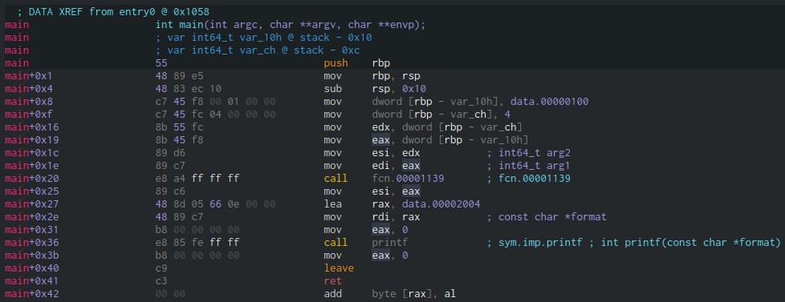
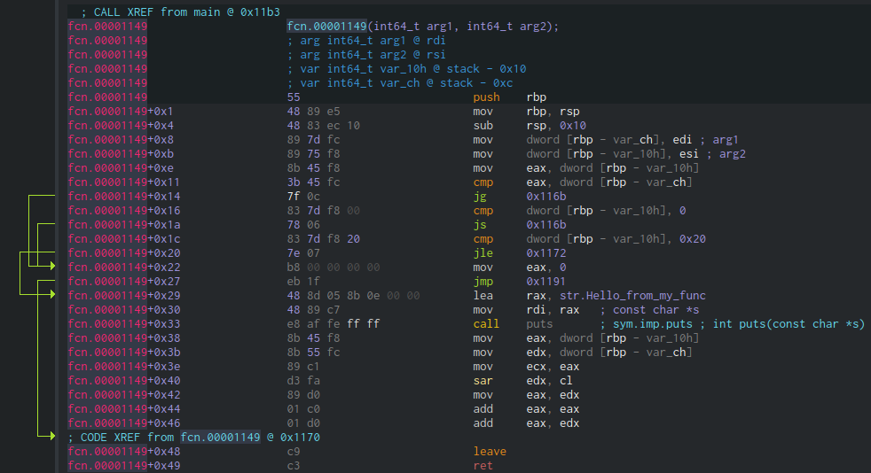
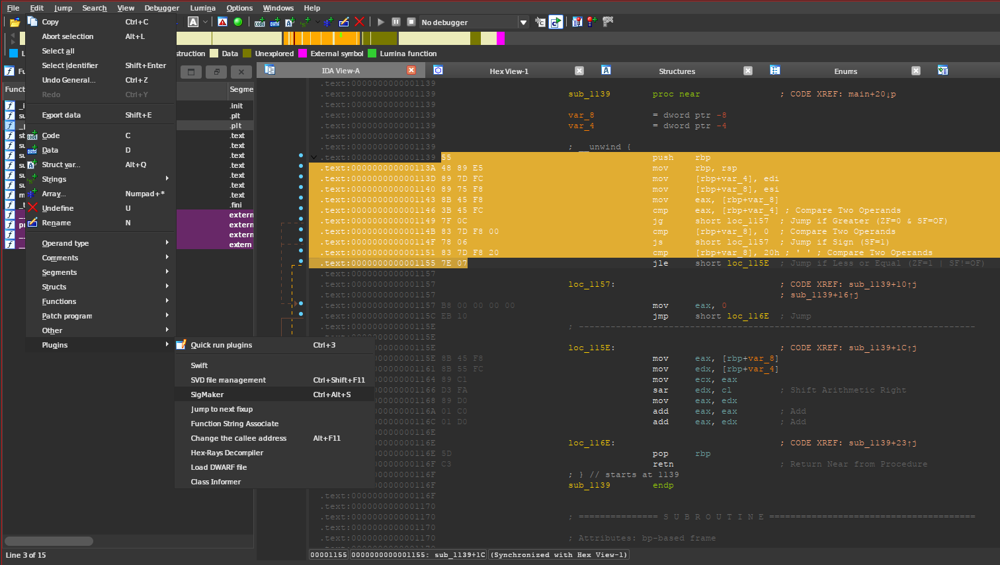

Signature scanning in C
Table of Contents
1. What is signature scanning?
First, let’s have a look at a sample program:
#include <stdio.h> static int my_func(int x, int y) { if (y > x || y < 0 || y > 32) return 0; puts("Hello from my_func!"); return (x >> y) * 3; } int main(void) { int x = 0x100; int y = 4; printf("%d\n", my_func(x, y)); /* Infinite loop for injecting later */ for (;;) ; return 0; }
Imagine we are, for example, injecting a .dll or .so into a process, and we want
to find a function or a value at runtime. A valid approach would be to scan the
memory of the loaded binary, and search for the bytes corresponding to the
function or variable. Then, depending on what we are actually looking for, we
could read the information, call the function, or even overwrite the bytes
directly from memory (after changing the necessary permissions, of course).
In our case, we would want to look for the bytes of the binary corresponding to
my_func.
2. Finding the function inside the binary
I will compile the previous source with gcc 13.2.1. We need to use -O0 so the
function call doesn’t get optimized. I also used strip to “simulate” a real
world scenario where we can’t just look at the symbols.
gcc -Wall -Wextra -O0 -o example.out example.c strip example.out
Let’s have a look at the generated binary using cutter, in my case version
2.3.1. First, we need to change some settings. Go to Edit > Preferences and make
sure the following settings are enabled in the disassembly tab:
- Display the bytes of each instruction: Enabled
- Number of bytes of each instruction: 8
- Align bytes to the left: Enabled
- Separate bytes with whitespace: Enabled
You can change the rest of the settings to match your taste. Note that you could also be using rizin for all the following steps, the backend and CLI version of cutter. All the mentioned settings can be changed in rizin by using the name in parentheses in the cutter menu.
Now that we configured cutter, we can see the assembly bytes of each instruction. These are the bytes that we will be using for our signature, but first, we need to find what we are looking for from cutter.
This is the disassembly of the main function:

As you can see, in main+0x8 we are loading 0x100 and 4 into the local
variables, and in main+0x1c we are loading them into the registers used for
function parameters according to the AMD64 System V ABI. In main+0x20, we are
calling my_func. Let’s double-click it to have a look at the assembly:

Yeah, that looks like our function.
3. Getting the signature
The signature is going to be an arbitrary number of bytes from the target function. However, some of the bytes will not be constant, so we need to have that in mind.
For example, the last 4 bytes of fcn.00001149+0x29 are not guaranteed to be
8b 0e 00 00. In our signature, we will have to use something like ? ? ? ? to
identify it.
Some plugins like IDA’s sigmaker are able to generate the signatures from a selection. I decided to use cutter just to show that you only need a disassembler.

For our signature, we should use enough bytes to make sure they are unique for the function/variable we are looking for. Here is a signature of the whole function, but in practice, we shouldn’t need more than 10 instructions.
55 48 89 E5 48 83 EC 10 89 7D FC 89 75 F8 8B 45 F8 3B 45 FC 7F 0C 83 7D F8 00 78 06 83 7D F8 20 7E 07 B8 ? ? ? ? EB 1F 48 8D 05 ? ? ? ? 48 89 C7 E8 ? ? ? ? 8B 45 F8 8B 55 FC 89 C1 D3 FA 89 D0 01 C0 01 D0 C9 C3
These kind of signature is usually called IDA format, but there are also code
signatures which contain the bytes directly in an array. To differentiate
between '?' and 0x3F, these normally use an extra mask parameter to indicate
which bytes are unknown. IDA patterns are usually cleaner, but make the
signature scanning function a bit larger.
4. Signature scanning function
This is a simple function that scans a memory area from start to end and
searches for a pattern in IDA format.
4.1. Parsing the IDA pattern string
First, we would need a function to convert those "E5 " strings into 0xE5. Here
it is:
#include <stdint.h> /* Used for getting the bytes from IDA patterns. * Converts: "E0" -> 224 */ uint8_t hex_to_byte(const char* hex) { int ret = 0; /* Skip leading spaces, if any */ while (*hex == ' ') hex++; /* Store a byte (two digits of string) */ for (int i = 0; i < 2 && hex[i] != '\0'; i++) { char c = hex[i]; /* For example "E ", although the format should always be "0E" */ if (c == ' ') break; uint8_t n = 0; if (c >= '0' && c <= '9') n = c - '0'; else if (c >= 'a' && c <= 'f') n = 10 + c - 'a'; else if (c >= 'A' && c <= 'F') n = 10 + c - 'A'; /* Shift size of 0xF and add the next half of byte */ ret <<= 4; ret |= n & 0xF; } return ret & 0xFF; }
4.2. The do_scan function
And with that, we can make our do_scan function:
#include <stdint.h> /* Search for `pattern' from `start' to `end'. */ void* do_scan(void* start, void* end, const char* pattern) { if (!start || !end) return NULL; /* Skip preceding spaces from pattern, if any */ while (*pattern == ' ') pattern++; /* Current position in memory and current position in pattern */ uint8_t* mem_ptr = start; const char* pat_ptr = pattern; /* Iterate until we reach the end of the memory or the end of the pattern */ while ((void*)mem_ptr < end && *pat_ptr != '\0') { /* Wildcard, always match */ if (*pat_ptr == '?') { mem_ptr++; /* "A1 ?? ?? B2" -> "A1 ? ? B2" */ while (*pat_ptr == '?') pat_ptr++; /* Remove trailing spaces after '?' * NOTE: I reused this code, but you could use `goto` */ while (*pat_ptr == ' ') pat_ptr++; continue; } /* Convert "E0" into 224. * TODO: Would be better to only do this once at the start of the * function with some kind of ida2bytes function (We would need a mask * for the '?' vs. 0x3F). */ uint8_t cur_byte = hex_to_byte(pat_ptr); if (*mem_ptr == cur_byte) { /* Found exact byte match in sequence, go to next byte in memory */ mem_ptr++; /* Go to next byte separator in pattern (space) */ while (*pat_ptr != ' ' && *pat_ptr != '\0') pat_ptr++; } else { /* Byte didn't match, check pattern from the begining on the next * position in memory */ start++; mem_ptr = start; pat_ptr = pattern; } /* Skip trailing spaces */ while (*pat_ptr == ' ') pat_ptr++; } /* If we reached end of pattern, return the match. Otherwise, NULL */ return (*pat_ptr == '\0') ? start : NULL; }
4.3. Getting the bounds of a loaded module
To get the start and end addresses, we need to find where the binary was loaded
in memory. I am going to show 2 methods of getting this information.
4.3.1. The unreliable method
On linux, we could use dlopen() to get the start and end addresses of a loaded
module if we were, for example, injecting our own shared object.
We have to make our own version of link_map to include link->phdr[0].p_memsz (to
get the size of the loaded module).
#include <stdint.h> #include <link.h> #include <dlfcn.h> #include <stdio.h> struct our_link_map { /* Base from link.h */ ElfW(Addr) l_addr; const char* l_name; ElfW(Dyn) * l_ld; struct our_link_map* l_next; struct our_link_map* l_prev; /* Added */ struct our_link_map* real; long int ns; struct libname_list* moduleName; ElfW(Dyn) * info[DT_NUM + DT_VERSIONTAGNUM + DT_EXTRANUM + DT_VALNUM + DT_ADDRNUM]; const ElfW(Phdr) * phdr; }; void* sigscan(const char* module, const char* pattern) { struct our_link_map* link = dlopen(module, RTLD_NOLOAD | RTLD_NOW); if (!link) { fprintf(stderr, "Can't open module \"%s\"", module); return NULL; } uint8_t* start = (uint8_t*)link->l_addr; uint8_t* end = start + link->phdr[0].p_memsz; dlclose(link); return do_scan(start, end, pattern); }
As far as I know, the windows equivalent of dlopen would be LoadLibraryA and
GetProcAddress. If you have more information on how this is done on windows,
feel free to contribute.
In theory, if we wanted to get the bounds of the main binary, we could pass NULL
as the first parameter to sigscan, so it gets passed to dlopen.
dlopen(3)
If filename is NULL, then the returned handle is for the main program. If filename contains a slash (“/”), then it is interpreted as a (relative or absolute) pathname.
I say in theory because in my experience, this is not the case. Usually
link->phdr is NULL, so the program crashes. That’s why I am going to show a more
reliable way.
4.3.2. Parsing /proc/self/maps
The /proc/<pid>/ folder contains many useful files, one of them being maps. The
maps file shows information about the currently mapped memory regions and their
access permissions in the following format (without the column names):
address perms offset dev inode pathname ---------------------------------------------------------------------- 00400000-00452000 r-xp 00000000 08:02 173521 /usr/bin/dbus-daemon 00651000-00652000 r--p 00051000 08:02 173521 /usr/bin/dbus-daemon 00652000-00655000 rw-p 00052000 08:02 173521 /usr/bin/dbus-daemon 00e03000-00e24000 rw-p 00000000 00:00 0 [heap] 00e24000-011f7000 rw-p 00000000 00:00 0 [heap] 0ff12000-0ff3e000 rw-p 00000000 00:00 0 ... 35b1800000-35b1820000 r-xp 00000000 08:02 135522 /usr/lib64/ld-2.15.so
Note how the pathname can be empty. For more information, see proc_pid_maps(5).
We can access the maps file of our process using the /proc/self/ folder, which
resolves to the PID of the current process. See also proc(5).
Of course, now comes the tedious part, parsing it. Fortunately for you, I made a function that returns a linked list of all these regions. It’s a pretty long function but since it’s well commented, I won’t dive into too much detail.
#include <stdbool.h> #include <stdio.h> /* fopen(), FILE* */ #include <stdlib.h> /* strtoull() */ typedef struct ModuleBounds { void* start; void* end; struct ModuleBounds* next; } ModuleBounds; ModuleBounds* get_module_bounds(const char* module_name) { FILE* fd = fopen("/proc/self/maps", "r"); if (!fd) return NULL; /* For the first module. Start `ret' as NULL in case no module is valid. */ ModuleBounds* ret = NULL; ModuleBounds* cur = ret; /* Buffers used in the loop by fgets() and sscanf() */ static char line_buf[300]; static char rwxp[5]; static char pathname[200]; while (fgets(line_buf, sizeof(line_buf), fd)) { pathname[0] = '\0'; /* Scan the current line using sscanf(). We need to change address sizes * depending on the arch. */ long unsigned start_num = 0, end_num = 0, offset = 0; int fmt_match_num = sscanf(line_buf, "%lx-%lx %4s %lx %*x:%*x %*d %200[^\n]\n", &start_num, &end_num, rwxp, &offset, pathname); if (fmt_match_num < 4) return NULL; void* start_addr = (void*)start_num; void* end_addr = (void*)end_num; /* Parse "rwxp". For now we only care about read permissions. */ const bool is_readable = rwxp[0] == 'r'; /* First, we make sure we got a name, and that it doesn't start with * '\0' or '['. Then, either we don't want to filter by module name * (module name is NULL) or we checked the module name and it matches. */ const bool name_matches = fmt_match_num == 5 && pathname[0] != '\0' && pathname[0] != '[' && (module_name == NULL || !strcmp(module_name, pathname)); /* We can read it, and it's the module we are looking for. */ if (is_readable && name_matches) { if (cur == NULL) { /* Allocate the first bounds struct */ cur = (ModuleBounds*)malloc(sizeof(ModuleBounds)); /* This one will be returned */ ret = cur; /* Save the addresses from this line of maps */ cur->start = start_addr; cur->end = end_addr; } else if (cur->end == start_addr && cur->end < end_addr) { /* If the end address of the last struct is the start of this * one, just merge them. */ cur->end = end_addr; } else { /* There was a gap between the end of the last block and the * start of this one, allocate new struct. */ cur->next = (ModuleBounds*)malloc(sizeof(ModuleBounds)); /* Set as current */ cur = cur->next; /* Save the addresses from this line of maps */ cur->start = start_addr; cur->end = end_addr; } /* Indicate the end of the linked list */ cur->next = NULL; } } fclose(fd); return ret; }
This function returns a linked list of ModuleList structures, which contain the
start and end addresses of the readable modules that match the provided
name. You can also pass NULL to return all readable sections (except the ones
whose name start with [, like [heap], [stack], etc.).
Of course, we would need to free the ModuleBounds structures allocated by
get_module_bounds after we are done with them.
/* Free a linked list of ModuleBounds structures */ void free_module_bounds(ModuleBounds* bounds) { ModuleBounds* cur = bounds; while (cur != NULL) { ModuleBounds* next = cur->next; free(cur); cur = next; } }
Finally, we can just call get_module_bounds and, while iterating those regions,
scan them using our do_scan function.
/* Search for `ida_pattern' in the specified `module'. */ void* sigscan(const char* module, const char* ida_pattern) { /* Get a linked list of ModuleBounds, containing the start and end addresses * of all the regions that match `module'. */ ModuleBounds* bounds = get_module_bounds(module); /* Iterate them, and scan each one until we find a match. */ void* ret = NULL; for (ModuleBounds* cur = bounds; cur != NULL; cur = cur->next) { void* cur_result = do_scan(cur->start, cur->end, ida_pattern); if (cur_result != NULL) { ret = cur_result; break; } } /* Free the ModuleBounds linked list */ free_module_bounds(bounds); return ret; }
5. Using our sigscan function
Now that we have the signature and our function for scanning, we just have to create a shared object that we can inject into a running process.
#include <stdio.h> /* Random '?' just to show wilcards */ #define MY_SIG "55 48 89 E5 48 83 EC 10 89 ? ? ? ? F8 8B 45 F8 ? ? FC 7F 0C 83" /* For readability */ typedef int (*func_ptr_t)(int, int); /* Entry point when injected */ __attribute__((constructor)) void load(void) { puts("Library loaded."); func_ptr_t found_func = sigscan(NULL, MY_SIG); if (found_func == NULL) { fprintf(stderr, "my_lib: Could not find function.\n"); return; } printf("my_lib: Found function at %p\n", found_func); int a = found_func(0x500, 4); printf("my_lib: Function returned %d\n", a); int b = found_func(0x1000, 4); printf("my_lib: Function returned %d\n", b); } /* Entry point when unloaded */ __attribute__((destructor)) void unload() { /* TODO: Clean up stuff, if needed */ puts("Library unloaded."); }
6. Injecting script and final Makefile
We can inject our library into the binary the GNU Debugger.
First, we attach to the PID of our target process (example.out), and, after
locating dlopen and dlerror, we call dlopen with two arguments: the path of our
library and the number 2, which corresponds to RTLD_NOW.
pid=$(pidof "example.out") libpath=$(realpath "my_lib.so") if [ "$pid" == "" ]; then echo "inject.sh: process not running." exit 1 fi sudo gdb -n -q -batch \ -ex "attach $pid" \ -ex "set \$dlopen = (void* (*)(char*, int))dlopen" \ -ex "set \$dlerror = (char* (*)(void))dlerror" \ -ex "call \$dlopen(\"$libpath\", 2)" \ -ex "call \$dlerror()" \ -ex "detach" \ -ex "quit"
This is the final Makefile for compiling the example app, the library and for injecting:
CC=gcc CFLAGS=-Wall -Wextra -O0 -fPIC .PHONY: all inject all: example.out my_lib.so example.out: example.c $(CC) $(CFLAGS) -o $@ $< my_lib.so: my_lib.c $(CC) $(CFLAGS) -shared -o $@ $< # NOTE: Make sure example.out is running inject: my_lib.so bash ./inject.sh
7. Signature scanning library
If you just want something that works, I made a lightweight single-header signature scanning library in pure C for GNU/Linux. This is the link.
Since it’s a simple single-header library, you just need to copy the
libsigscan.h file to your project and #include it on your sources.
The library consists of just 2 functions: sigscan_module() and sigscan(). The
first scans the specified IDA signature in all the modules matching the
specified regex pattern. Note that it uses the Extended Regular Expression (ERE)
syntax, so keep that in mind before escaping certain characters like + and
?. See also BRE vs. ERE.
The second function is just a wrapper for passing NULL to the first one,
therefore searching in all loaded modules. Depending on the memory being used by
the process, calling this function might take a few seconds, so it’s better to
filter the module name with sigscan_module() whenever possible.